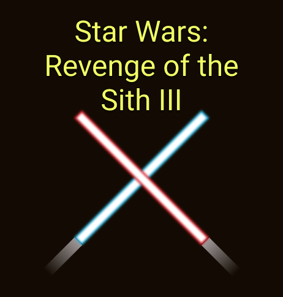
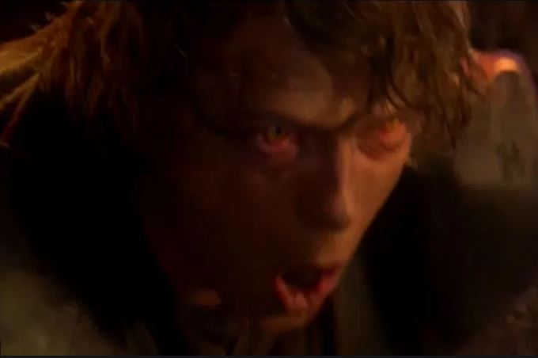
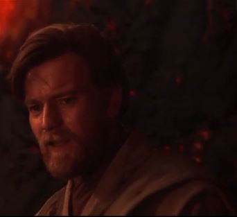

ANAKIN and OBI-WAN confront each other on the lava river.
- ANAKIN: I should have known the Jedi were plotting to take over . . .
- OBI-WAN: From the Sith!!! Anakin, Chancellor Palpatine is evil.
- ANAKIN: From the Jedi point of view! From my point of view, the Jedi are evil.
- OBI-WAN: Well, then you are lost!
- ANAKIN: This is the end for you, My Master. I wish it were otherwise.
ANAKIN jumps and flips onto OBI- WAN's platform. The fighting continues again until OBI-WAN jumps toward the safety of the black sandy edge of the lava river. He yells at Anakin.
- OBI-WAN: It's over, Anakin. I have the high ground.
- ANAKIN: You underestimate my power!
- OBI-WAN: Don't try it.
ANAKIN follows, and OBI-WAN cuts his young apprentice at the knees, then cuts off his left arm in the blink of an eye. ANAKIN tumbles down the embankment and rolls to a stop near the edge of the lava.
ANAKIN struggles to pull himself up the embankment with his mechanical hand. His thin leather glove has been burned off. He keeps sliding down in the black sand.
- OBI-WAN: (continuing) . . . You were the Chosen One! It was said that you would, destroy the Sith, not join them. It was you who would bring balance to the Force, not leave it in Darkness.
OBI-WAN picks up Anakin's light saber and begins to walk away. He stops and looks back.
ANAKIN: I hate you!
OBI-WAN: You were my brother, Anakin. I loved you.


Reference Link
Star Wars Revenge of the Sith Script Source